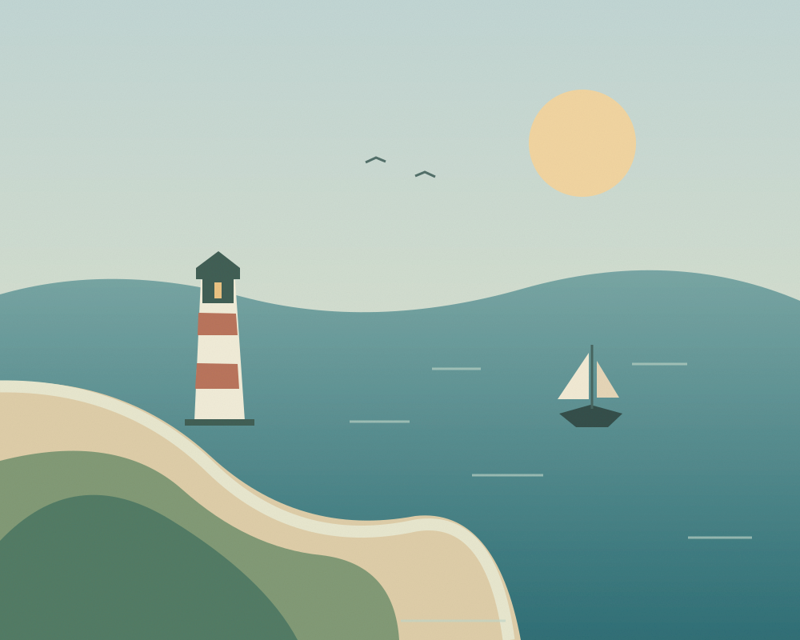
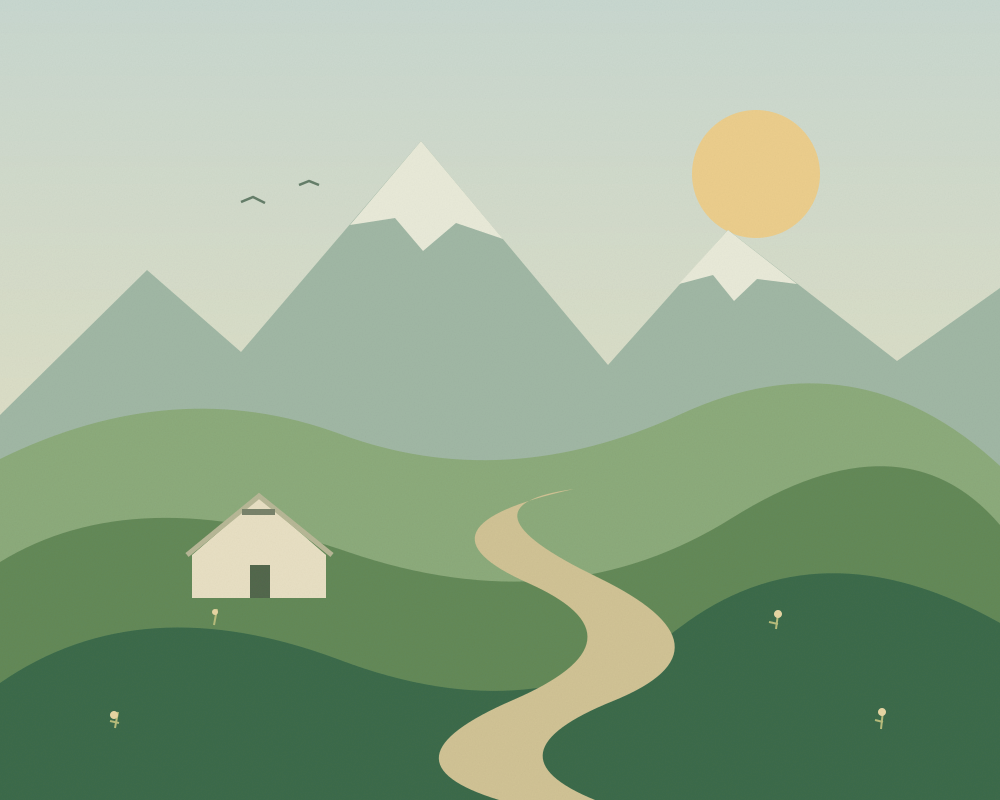

山间有风01 / MOUNTAINS
松阳 住进山的褶皱里
古村、茶田和炊烟。把闹钟关掉，等一场山里的日出。
A LITTLE ESCAPE
总有一处风景，刚好懂你。
古村、茶田和炊烟。把闹钟关掉，等一场山里的日出。

向海而行02 / COASTLINE沿着环岛路慢慢骑，把落日、咸味的风和蓝色装进口袋。

旷野漫游03 / WILDERNESS走进草原深处，看云的影子，缓缓经过一整片绿色。
点击目的地上的爱心，就能在这里找到它。
FIELD NOTES · 出发手记
不用把行程填满，不用赶每一个日落。
留一段空白，给路上不期而遇的小事。
出发前的小小清单
剩下的，交给沿途的风。↗愿你的下一次出发，是因为喜欢。
↑